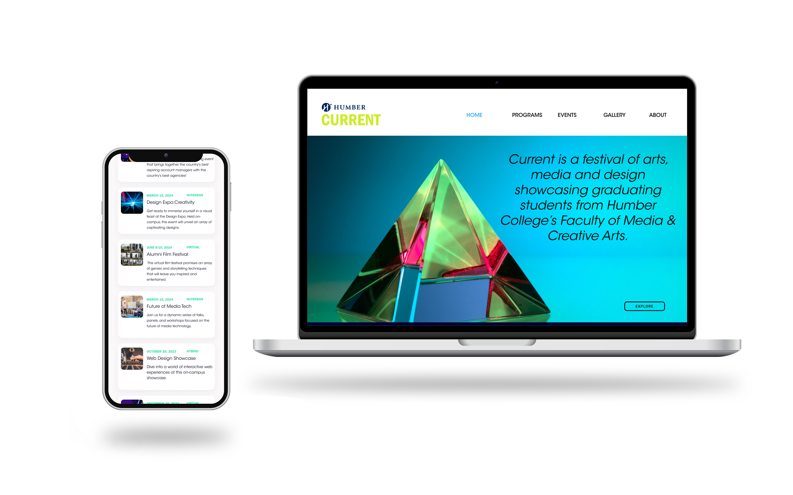
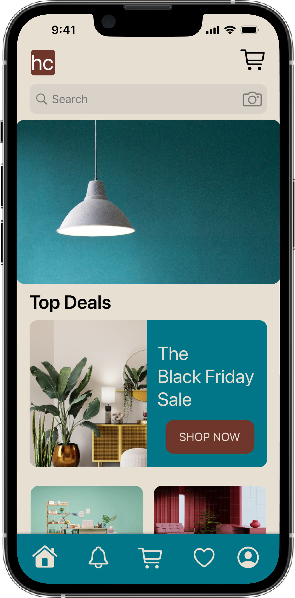
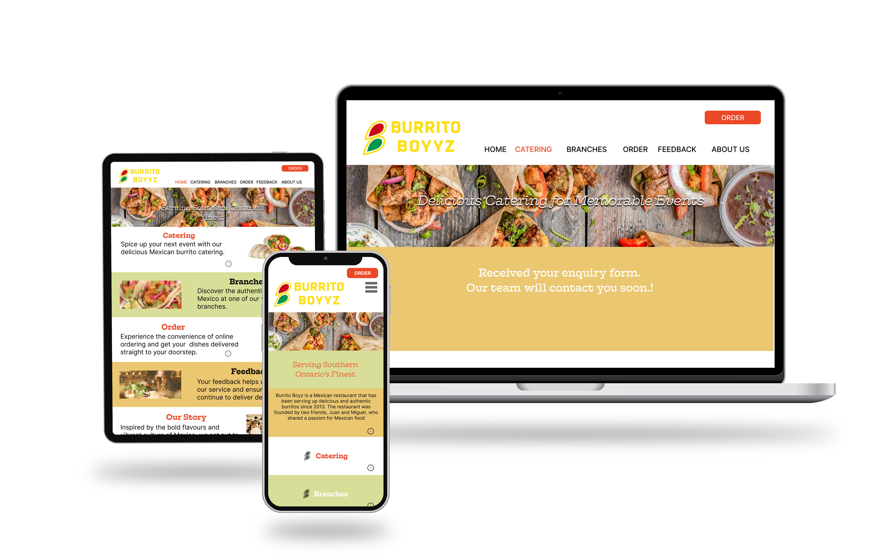
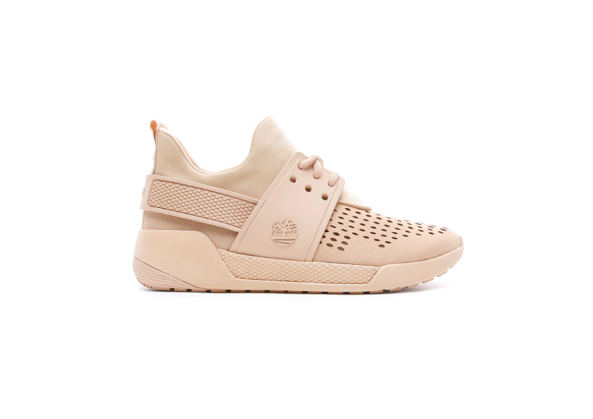
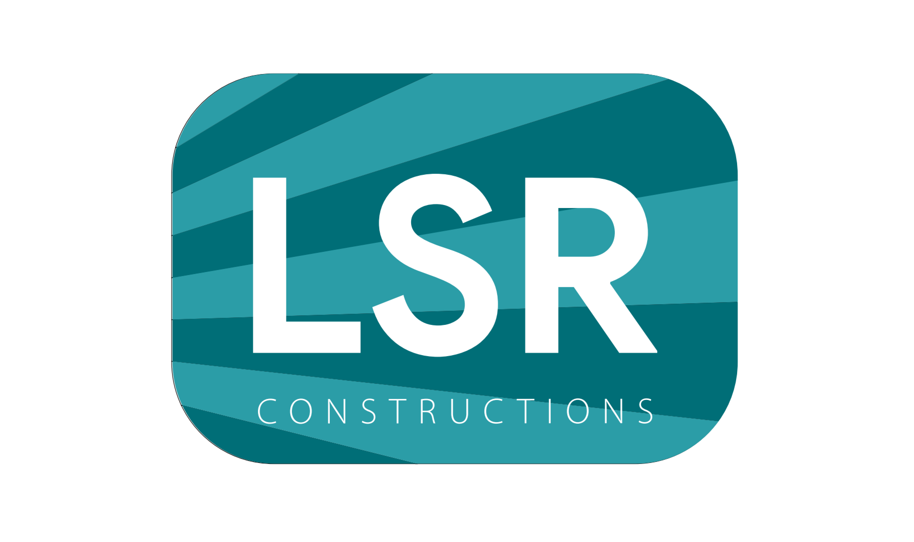
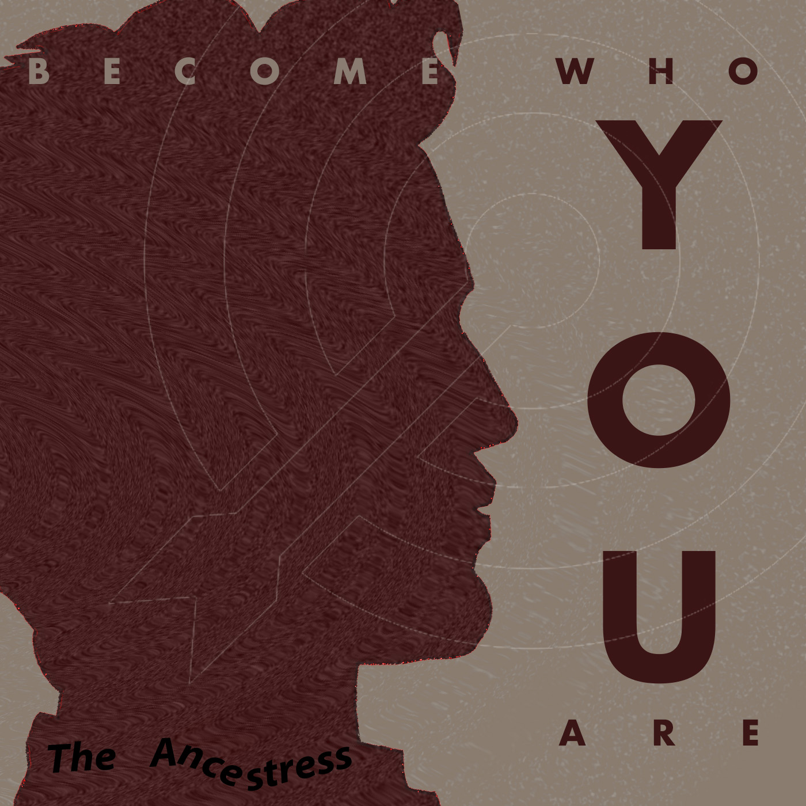

Redesigning HumberCurrent Website
I revamped the Humbercurrent website, ensuring responsiveness across both mobile and desktop platforms. This transformation followed a comprehensive audit of the existing website, utilizing design tools such as Figma, Illustrator, and Miro.
I revamped the Humbercurrent website, ensuring responsiveness across both mobile and desktop platforms.
MovieDesi : A Movie Ticketing App

The project aims to create an intuitive and efficient app for Indian film screenings at Canadian theaters, with features like notifications, seat seletion, and e-tickets to improve the customer experience. I plan to present it as an interactive Figma prototype to demonstrate its flow and features.
The goal is to design a streamlined mobile app for Indian movie screenings in Canada, offering features like alerts and digital ticketing, presented as an interactive Figma prototype.
HumberCraft : a native iOS App
I recreated the Burrito Boyz restaurant website as a clickable prototype, incorporating a revamped visual design with updated colors and typography for a cohesive and appealing look. The user interface was fine-tuned to ensure easy navigation on both desktop and mobile devices. The menu section received a special focus, featuring enticing images and organized categories to streamline the ordering process for a seamless user experience.
I recreated the Burrito Boyz restaurant website as a clickable prototype
Redesigning Restaurant Website
I recreated the Burrito Boyz restaurant website as a clickable prototype, incorporating a revamped visual design with updated colors and typography for a cohesive and appealing look. The user interface was fine-tuned to ensure easy navigation on both desktop and mobile devices. The menu section received a special focus, featuring enticing images and organized categories to streamline the ordering process for a seamless user experience.
I recreated the Burrito Boyz restaurant website as a clickable prototype
Promotional Video
Produced a captivating promotional video to showcase the distinct features and style of Timberland footwear, highlighting its durability, comfort, and fashion-forward design, ultimately driving brand engagement and customer interest.
Produced a captivating promotional video for Timberland brand.
Logo Reveal Animation
Designed and produced a captivating logo reveal animation for LSR Constructions, an esteemed construction company, enhancing their brand presence with dynamic visual engagement.
Designed and produced a captivating logo reveal animation for LSR Constructions.
Album Covers & Posters Designing
Academic Project: Album Covers & Posters Designing